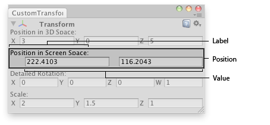

EditorGUI翻译：宗宗
- actionKey
- ColorField
- CurveField
- DrawPreviewTexture
- DrawTextureAlpha
- DropShadowLabel
- EnumPopup
- FloatField
- Foldout
- indentLevel
- InspectorTitlebar
- IntField
- IntPopup
- IntSlider
- LabelField
- LayerField
- MinMaxSlider
- ObjectField
- PasswordField
- Popup
- PrefixLabel
- ProgressBar
- PropertyField
- RectField
- Slider
- TagField
- TextArea
- TextField
- Toggle
- Vector2Field
- Vector3Field
- Vector4Field
EditorGUI.Vector2Field 二维向量字段
static function Vector2Field (position : Rect, label : string, value : Vector2) : Vector2
Parameters参数
- positionRectangle on the screen to use for the field.
屏幕上的矩形区域 - labelLabel to display above the field.
该字段上面显示的标签 - valueThe value to edit. // 编辑的值
Vector2 - The value entered by the user.
返回Vector2 - 用户输入的值。
Description描述
Make an X & Y field for entering a Vector2.
制作一个X和Y 的输入框，用来输入Vector2。

Vector2 field in an Editor Window.
二维向量字段在编辑器窗口。
// Editor window that shows the detailed rotation (X,Y,Z and W components),
//编辑窗口显示详细的旋转
// the position in 3D space and position in Screen space of the selected
// transform.
//选择变换，在三维空间的位置和屏幕空间的位置
class CustomTransformInspector extends EditorWindow {
var showing : boolean = true;
var rotationComp : Vector4;
@MenuItem("Examples/GameObject detailed inspector")
static function Init() {
var window = GetWindow(CustomTransformInspector);
window.Show();
}
function OnInspectorUpdate() {
Repaint();
}
function OnGUI() {
var currObj = Selection.activeTransform;
showing = EditorGUI.InspectorTitlebar(Rect(0,0,position.width, 20), showing, currObj);
if(showing) {
if(currObj) {
currObj.position = EditorGUI.Vector3Field(Rect(3,15,position.width-6,20),
"Position in 3D Space:",
currObj.position);
EditorGUI.Vector2Field(Rect(3,50,position.width-6,20),
"Position in Screen Space:",
Camera.main.WorldToScreenPoint(currObj.position));
rotationComp = EditorGUI.Vector4Field(Rect(3, 85, position.width-6, 20),
"Detailed Rotation:",
QuaternionToVector4(currObj.localRotation));
currObj.localRotation = ConvertToQuaternion(rotationComp);
currObj.localScale = EditorGUI.Vector3Field(Rect(3,120,position.width-6,20),
"Scale:",
currObj.localScale);
} else {
EditorGUI.DropShadowLabel(Rect(3,15,position.width,20),"Select an Object to inspect");
}
}
}
function ConvertToQuaternion(v4 : Vector4) {
return Quaternion(v4.x, v4.y, v4.z, v4.w);
}
function QuaternionToVector4(q : Quaternion) {
return Vector4(q.x, q.y, q.z, q.w);
}
}最后修改：2011年6月23日 Thursday 17:30